In today’s digital world, users are exposed to a large amount of entertainment content such as movies and web series. Choosing what to watch can become confusing without a proper system to guide selection.
This project, titled Movie Recommendation System, is designed to simulate how recommendation platforms suggest movies to users based on their preferences and ratings. The system is built using Python and SQLite and works entirely on a terminal-based interface.
It allows users to register, log in, view trending movies, receive personalized recommendations, explore random movies, and rate movies. The recommendation logic is based on user rating patterns and movie genres.
The project demonstrates how simple database operations and basic logic can be used to create a functional recommendation system without using advanced machine learning techniques.
This project mainly uses built-in Python libraries.
SQLite is already included in Python standard library, so installation is usually not required. However, if you still want to install it explicitly, you can use:
pip install sqlite3
👉 Note: In most systems, this is NOT required becausesqlite3 comes pre-installed with Python.
python initialize.py
python main.py
It handles:
The logic ensures smooth interaction between user input and database operations.
Tables used:
All data operations such as insert, update, and fetch are handled using SQL queries.
The current Movie Recommendation System is a simple terminal-based project using Python and SQLite. It already demonstrates basic features like user login, movie rating, and recommendation based on genre and average ratings. However, it has strong potential for further improvement.
In the future, the system can be upgraded using machine learning techniques such as collaborative filtering and content-based filtering. This will help in providing more accurate and personalized movie suggestions based on user behavior.
The project can also be converted into a graphical user interface (GUI) using Tkinter or PyQt. This will make the system more interactive and easier to use compared to the terminal version.
Another major improvement is converting it into a web application using Flask or Django, so that users can access it through browsers on different devices.
Security can also be enhanced by adding password encryption (hashing) instead of storing plain text passwords, along with safer authentication methods.
More movie details such as cast, release year, posters, trailers, and external ratings can be added to make the system more realistic and informative. A dashboard for analytics like popular movies and trending genres can also be included.
Finally, the system can be extended into a mobile application using Flutter or React Native, and can also use cloud databases for large-scale multi-user access.
In conclusion, this project is a strong base model that can be expanded into a full-scale intelligent recommendation system similar to modern OTT platforms.
📄 main.py
This file contains the main application logic of the Movie Recommendation System, including user authentication, movie browsing, rating system, and recommendation features. It connects the user interface with the SQLite database and handles all runtime interactions.
⚙️ initialize.py
This file is used to create and initialize the SQLite database structure and load movie data from the JSON file. It also rebuilds the database if it is missing or corrupted to ensure proper system setup.
🎬 movies.json
This file contains the initial dataset of movies including their name, genre, and description in JSON format. It is used to populate the database with sample movie records during initialization.
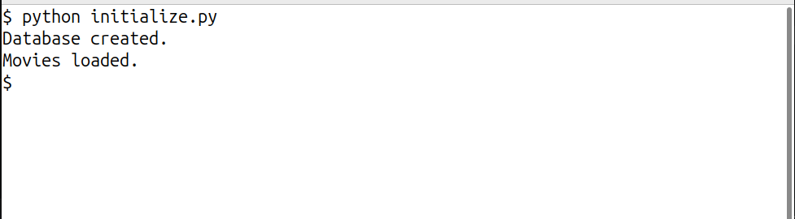
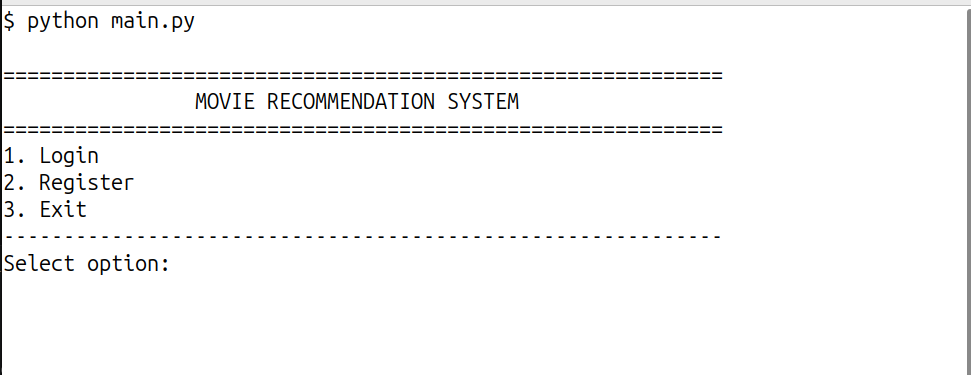
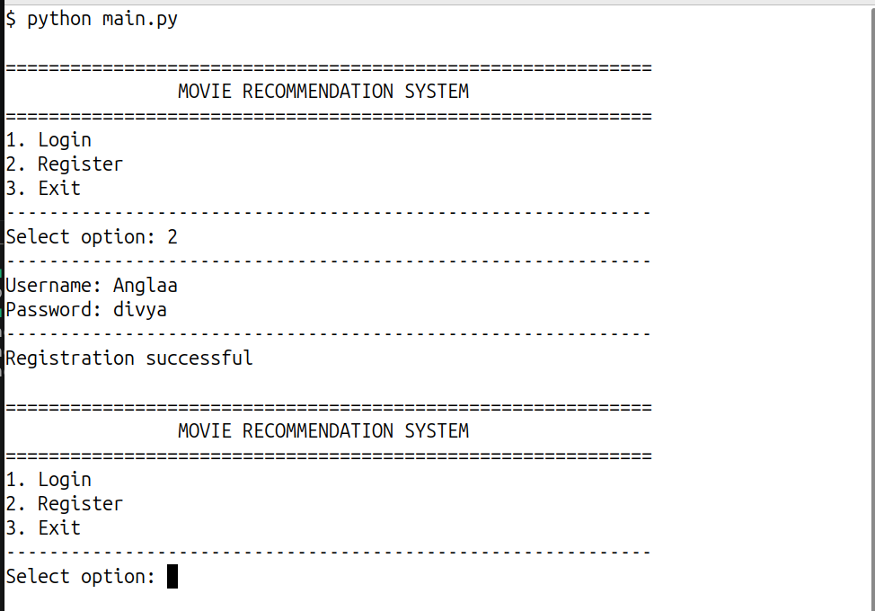
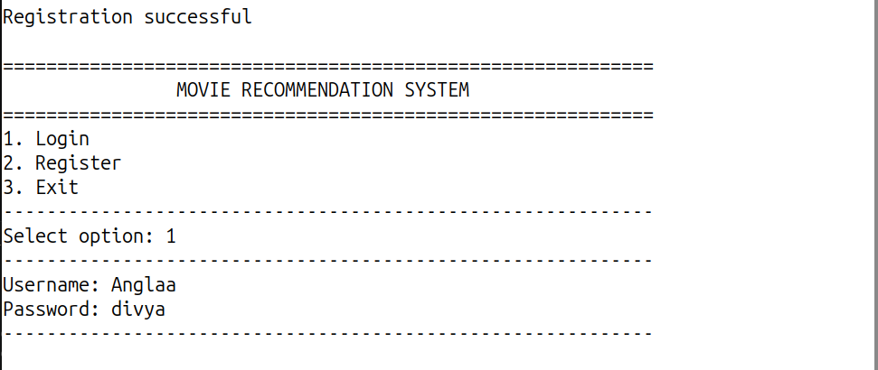
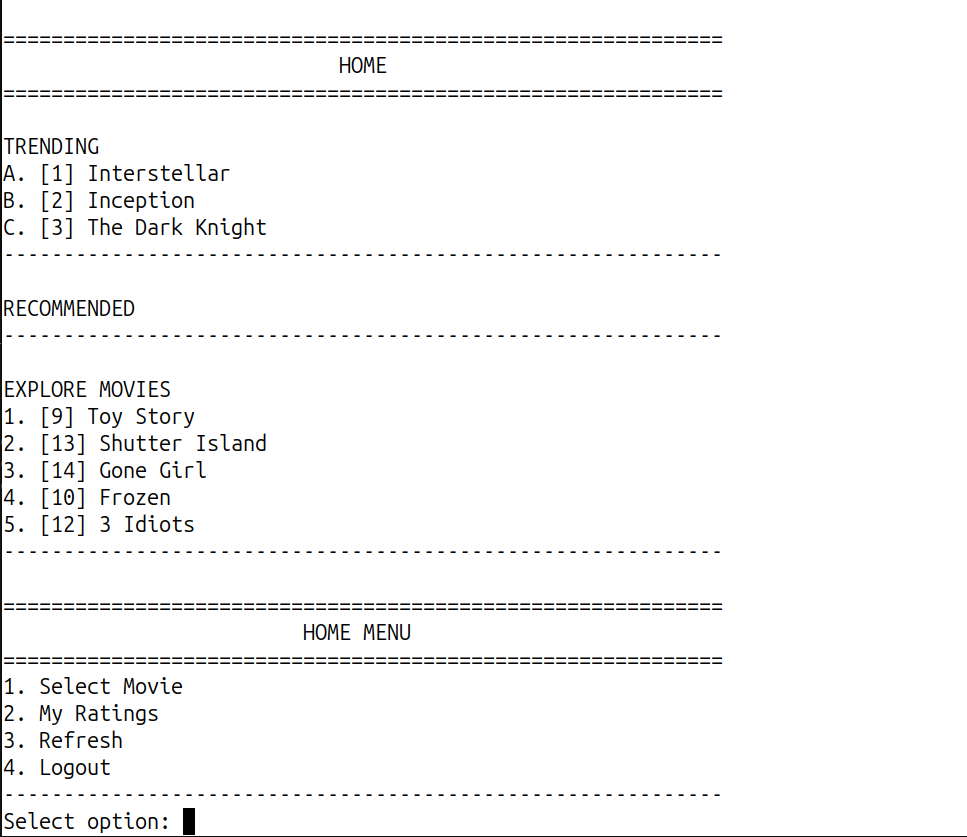
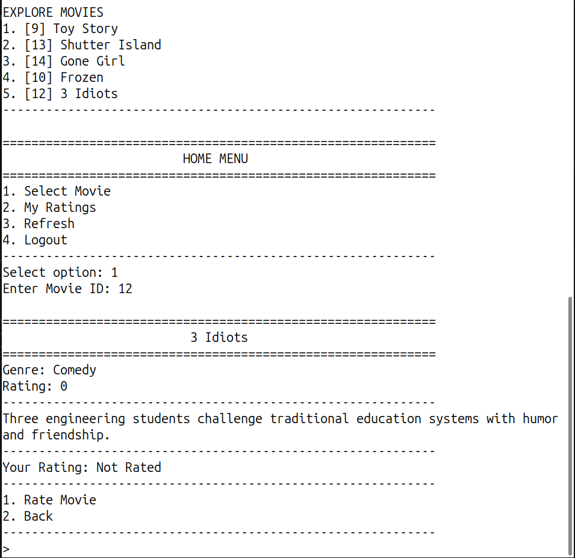
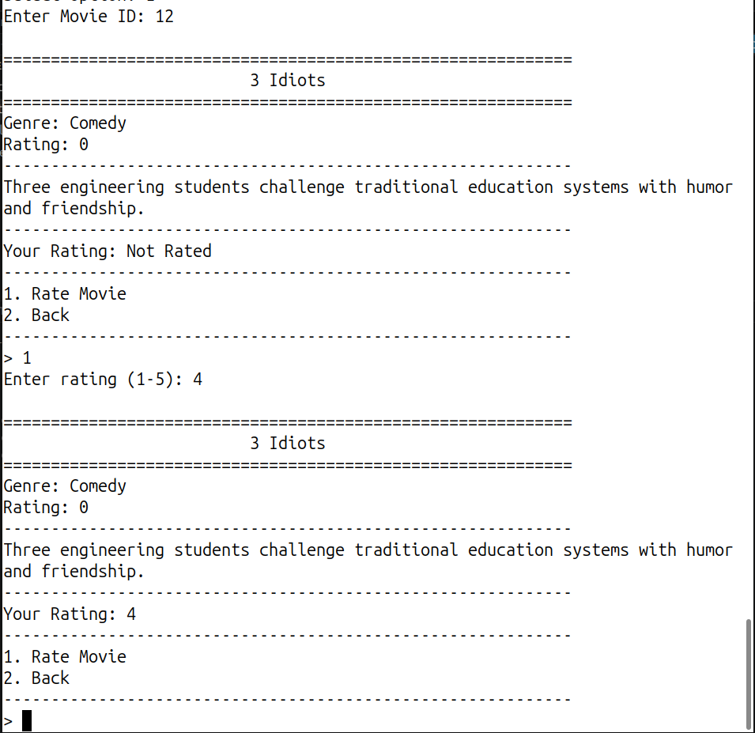
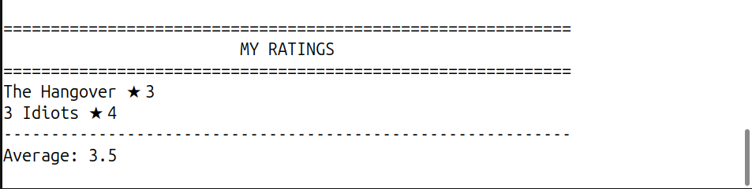
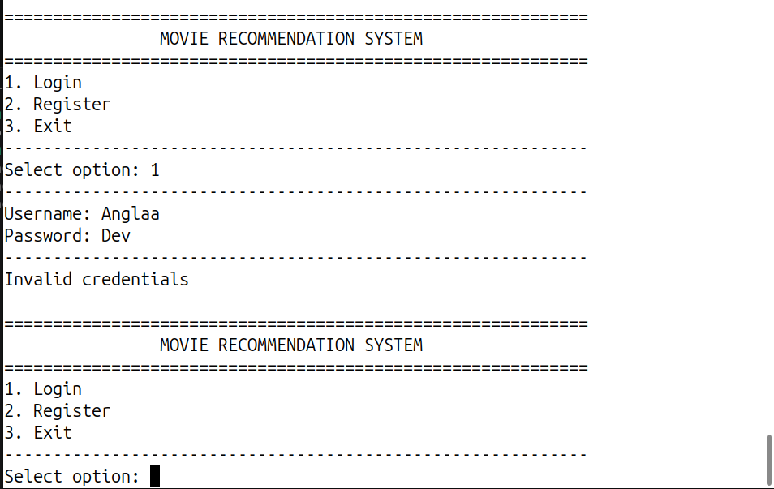
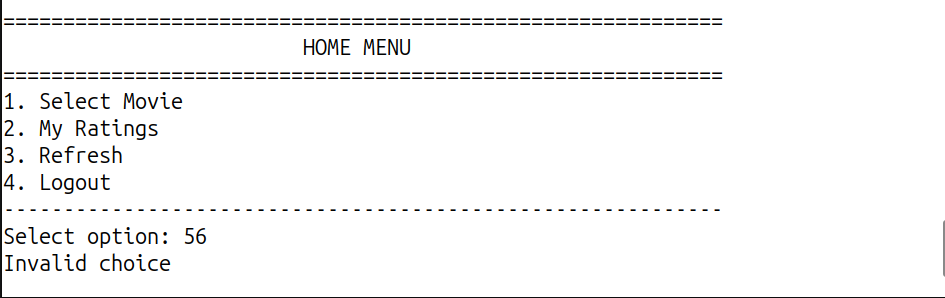
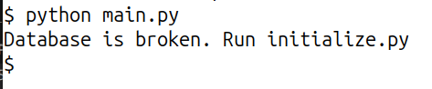
The following sources and references were used during the development of this project:
The following movies were included in the project database: